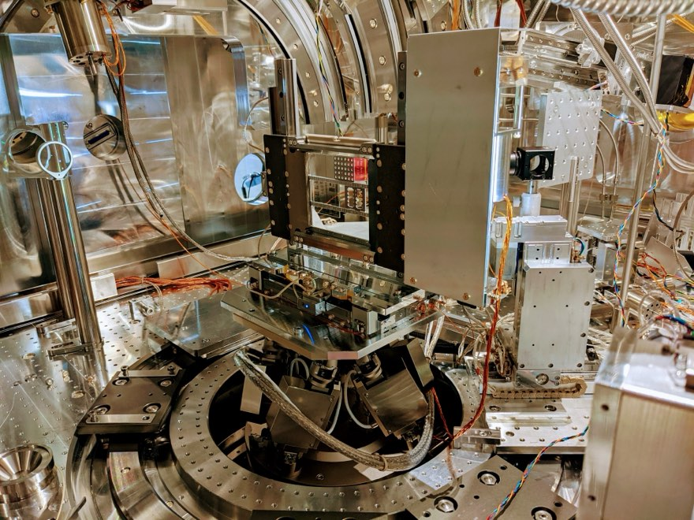
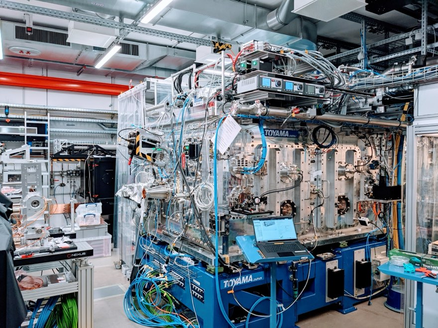

Detector, test and calibration electronics for X-ray science, most of it at European XFEL, the X-ray free-electron laser in the Hamburg area. These are short summaries: work that is not yet public stays out. The full record is in the CV.
01
Detector development for future XFEL detectors
2023 – present · European XFEL, Detectors Group
I lead the work package for electronics development in detector development projects at European XFEL. I take electronics for fast X-ray detectors from concept to a working unit: schematics, PCB layout, MCU firmware, prototyping and technical documentation. I also plan power supply and cabling for detector infrastructure at the scientific instruments.
I led the design, assembly and commissioning of a test setup for single readout chips and new X-ray sensors, with power control, temperature regulation, data acquisition and integration into Karabo, the facility’s control software.
Test systems
Power control
Temperature regulation
Karabo
DAQ
03
Calibration instrumentation for X-ray detectors
2023 – present · European XFEL, Detectors Group
I developed calibration hardware for JUNGFRAU and GOTTHARD-II, two X-ray detectors developed at the Paul Scherrer Institute and used at European XFEL: a backplane pulser for JUNGFRAU and a calibration device for GOTTHARD-II.
Calibration
Embedded systems
Zynq SoC
04
Model-based systems engineering
Since 2023 · European XFEL, Detectors Group
I introduced model-based systems engineering (MBSE) with SysML v2 and an AI-assisted engineering workflow to the group’s electronics projects, and I coach colleagues in AI-assisted engineering.
In parallel I am an Executive PhD candidate in Engineering Physics and Materials at Ca’ Foscari University of Venice, working on test instrumentation and AI-assisted model-based systems engineering for X-ray detectors.
MBSE
SysML v2
AI-assisted engineering
05
Instrument electronics for HED and MID
2016 – 2023 · European XFEL, Scientific Instruments
As instrument engineer I looked after the electronics of two scientific instruments, High Energy Density (HED) and Materials Imaging and Dynamics (MID), from requirements to operation. I turned the scientists’ needs into technical specifications, ran trade-off analyses for critical components and coordinated system integration.
I designed and built custom devices: amplifiers, motion control, equipment-protection interlocks and power supplies.
Selected work
2018HED controls infrastructure. Planned the controllers, vacuum pumps and other infrastructure for an instrument with more than 300 actuators (stepper and piezo motors, pneumatic actuators, hexapods) on Beckhoff PLCs; reviewed schematics before production; selected and commissioned actuators and sensors.
2019HED interaction chamber IC1. Cabling concept for a large multi-purpose vacuum chamber: feedthrough pin-outs, vacuum-compatible Kapton twisted-pair cables with copper braid for in-vacuum motors, encoders and LED illumination, standards for suppliers, vacuum interlocks and a key system.
2019MID X-ray Scattering and Imaging Setup (XSIS). Worked with the manufacturer on electrics and controls, led the factory and site acceptance tests and integrated the system step by step across a safety PLC, Beckhoff PLCs and Karabo.
2021HED intensity and position monitor. A diagnostic that measures the intensity and position of each X-ray pulse from the backscatter of a thin foil. I mounted the six photodiodes in a clean room, designed their bias-tees for fast digitisers and wrote an adaptive attenuation routine in Python for Karabo.
2022Karabo devices. Python drivers for piezo-motor controllers, a bridge that brings ZigBee sensors into Karabo through Home Assistant, and scripts for calibration, motion and vacuum control.

HED_IC1.JPG Inside the interaction chamber IC1, 2021

HED.JPG At the HED instrument, 2021
Co-author of the instrument papers: HED and MID (J. Synchrotron Rad., 2021). All papers: CV → Publications.
Betatrons are compact electron accelerators; these were built for industrial non-destructive testing. I designed their control systems (schematics, PCB layout, microcontroller firmware) and power converters, and I commissioned, validated and troubleshot betatron installations.